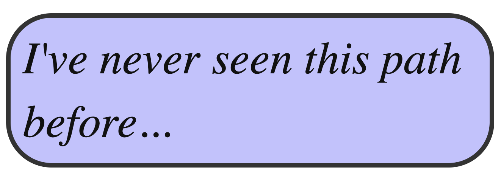

The target="_blank" attribute in HTML links is used to specify where a linked document should open. When you set target="_blank", the link will open in a new browser tab or window, leaving your current page open. This is useful when you want to direct users to external resources without losing their place on your site.
For example:
<a href="https://example.com" target="_blank">Visit Example</a>For more information about the target attribute got to the W3Schools reference on the target attribute.
The CSS :hover pseudo-class is used to style elements when a user hovers their cursor over them. This is a great way to provide visual feedback to users, making your site more interactive and responsive.
For example, you can change the color of a link when someone hovers over it:
a:hover {
color: #ff0000;
text-decoration: underline;
}For more information about the hover pseudo-class and how to use it, visit the W3Schools reference on the CSS :hover selector.
More about Psuedo-classes: W3Schools reference on CSS pseudo-classes
For the Interactive story assignment, you can create link hotspots on images using HTML Image Map.
Today we're building a simple speech bubble but you can use all the principles we cover to create other reusable UI elements.

To get there, we'll cover:
The speech bubble pulls all of them together in a single, reusable class.
<div> ElementA <div> is a generic, block-level container. It has no visual appearance of its own: no color, no border, no size. Its job is to wrap content so you can target and style it as a unit with CSS.
Our speech bubble starts as a bare div with text inside:
<div>I've never seen this path before...</div>Right now it looks like plain text. To style it, we need a way to target it in CSS, which means giving it a class.
<div class="speech-bubble">I've never seen this path before...</div>Now CSS can find it. The class is the hook that connects the HTML to the stylesheet.
CSS selectors tell the browser which HTML elements to style. There are three fundamental types.
A type selector targets every element of a given tag. A rule for div applies to every div on the page, useful for broad defaults but too broad for a specific element like our bubble.
/* Styles every <div> on the page */
div {
font-size: 60px;
}A class selector targets any element with a matching class attribute. In CSS, class names are preceded by a period . — this is how we'll style the speech bubble. Write the rule once, apply it to as many divs as you need.
/* targets any element with class="speech-bubble" */
.speech-bubble {
background-color: rgb(194, 194, 255);
border-radius: 60px;
padding: 12px 16px;
}In your HTML:
<div class="speech-bubble">I've never seen this path before...</div>
<div class="speech-bubble">We should turn back.</div>An ID selector targets one unique element. IDs are preceded by # and should only appear once per page. Use them for page-specific overrides. For example, positioning a bubble differently on one particular scene.
/* targets only the bubble on scene 3 */
#scene-3-bubble {
top: 40px;
left: 60px;
}| Selector | Syntax | Targets |
|---|---|---|
| Type | div { } |
All <div> elements |
| Class | .speech-bubble { } |
Any element with class="speech-bubble" |
| ID | #scene-3-bubble { } |
The one element with id="scene-3-bubble" |
Side note: the :hover pseudo-class: We covered this in an earlier week, but it fits here as well. The :hover pseudo-class (e.g. .speech-bubble:hover { opacity: 0.8; }) applies styles only when the user's cursor is over an element. You can append :hover to any type, class, or ID selector. It's just another way of targeting elements, this time based on user interaction rather than structure.
Every HTML element, including our speech bubble div, is treated by the browser as a rectangular box. The CSS Box Model describes the layers that make up that box, from the inside out:
.speech-bubble {
padding: 12px 16px; /* space between text and border */
border: 6px solid #333333; /* visible outline */
border-radius: 60px; /* rounds corners into bubble shape */
margin: 10px; /* space outside the bubble */
}You can play around with these properties in this interactive box model demo at w3schools.com: CSS Box Model.
The CSS position property controls how an element is placed in the document. To float our speech bubble over a scene image, we need to understand two key values: relative and absolute.
Now to combine the div, the class selector, the box model, positioning, and z-index, all together.
Create the<div> with the "speech-bubble" class.
<div class="image-container">
<img src="images/scene.jpg" alt="A forest path at night">
<div class="speech-bubble">I've never seen this path before...</div>
</div>Combining everything together as one class (with a few extra adjustments) gives every bubble across all your story pages the same look:
.speech-bubble { /* class selector: write once, reuse on every page in your story */
position: relative; /* lifts the bubble out of normal flow for precise placement */
top: 20px;
left: 20px;
z-index: 2; /* renders in front of the scene image (image is z-index: 1) */
background-color: rgb(194, 194, 255);
color: #111111;
padding: 12px 16px; /* space between text and bubble edge so it doesn't look cramped */
border: 6px solid #333333;
border-radius: 60px; /* softens corners into the rounded bubble shape */
margin: 10px; /* space outside the bubble, separates it from neighboring elements */
max-width: 600px; /* prevents the bubble from getting too wide on larger screens */
font-size: 60px;
line-height: 1.4;
}You can extend this same pattern for navigation choices (.choice-link), character name labels (.character-name), or any repeating UI element across your story pages. As noted in Week 11, you can also create clickable hotspot areas directly on images using HTML Image Map: another way to embed navigation within a scene.
As you build your story, think about which elements repeat across pages. Each one is a candidate for a reusable class. Define it once in your stylesheet and apply it wherever you need it.
.speech-bubble) — character dialogue overlaid on a scene image.choice-link) — styled navigation buttons that move the reader between pages.character-name) — a small tag identifying who is speaking or present.place-name) — overlaid location title for each scene.narration) — a semi-transparent panel for story text that isn't dialogue.nav-arrow) — consistent previous/next controls across all pagesYou do not need all of these. Just pick the ones that fit your story. The key idea is to create a class any time you catch yourself writing the same styles twice.